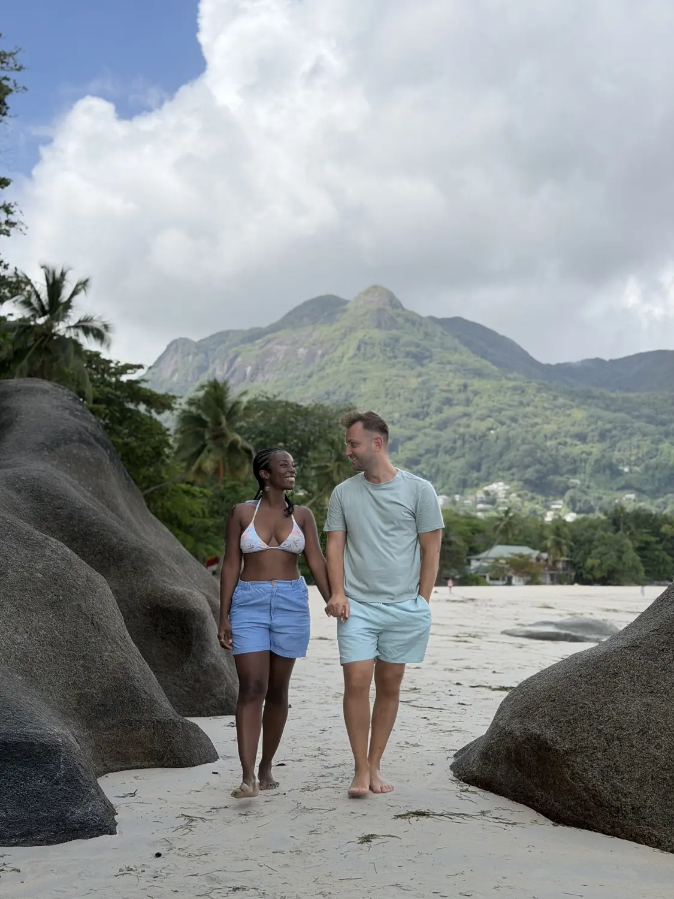
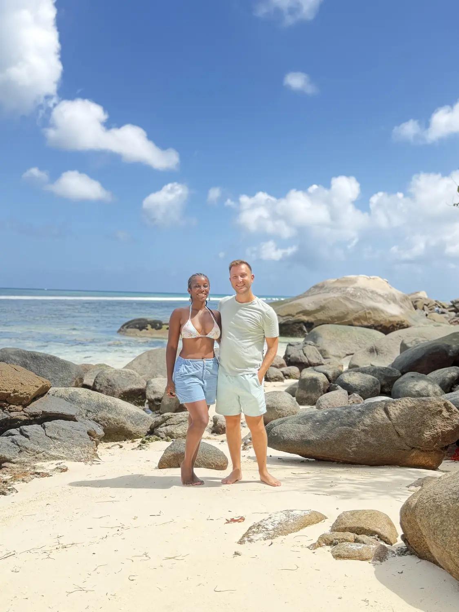

Our base01
Beau Vallon
📍 Mahé's north-west coast
We spent most of our time on Mahé in Beau Vallon, and we loved it as a base. It's a long, soft sweep of sand with calm water, green mountains rising straight up behind it and — our favourite part — little coves of huge, smooth granite boulders at either end. Walk to the far ends of the beach and you'll often have a rocky cove all to yourselves.
Great base on MahéWalk to the ends